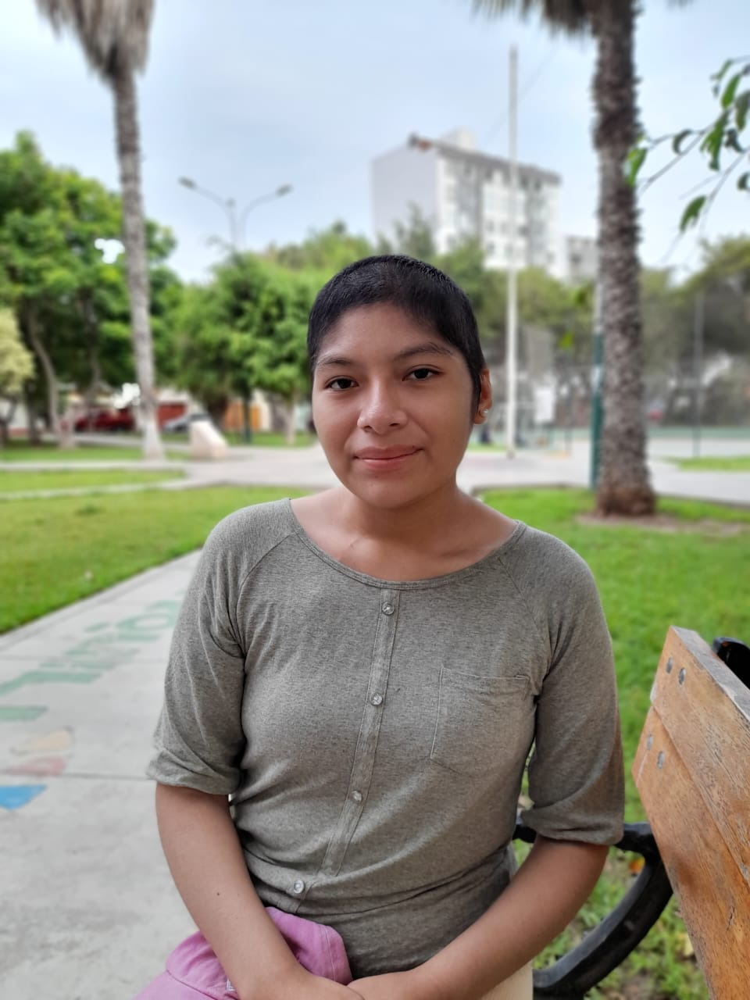

Los Primeros Años
Desde su nacimiento, la vida de Nathi no fue fácil. Nació en medio de complicaciones, y casi su
madre la pierde. A la edad de un año, enfrentó una fuerte infección que casi le cuesta la vida.
Sin embargo, su espíritu luchador emergió desde temprano, y pronto todo parecía marchar bien.
Infancia y Amistades
Nathi siempre fue una niña callada y dedicada a sus estudios. En la escuela, tenía solo dos
mejores amigas que eran como hermanas para ella. Aunque no le gustaba ir a fiestas ni practicar
cosas malas, encontró en sus estudios y en su deseo de salir adelante su mayor motivación. Desde
pequeña, soñaba con ayudar a los más necesitados, y creía que estudiar medicina le permitiría
alcanzar ese objetivo.
Desafíos y Bullying
Sin embargo, la vida le presentaría nuevos retos. Después de tercer grado, la amistad con sus
mejores amigas se rompió, y comenzó a ser objeto de burlas por su peso. A pesar de las
dificultades, Nathi se hacía la fuerte y seguía adelante, reconociendo todo lo que había logrado
y negándose a dejarse llevar por un aspecto superficial.
Aspiraciones y Sacrificios
Con su meta clara, Nathi se sumergió en sus estudios de medicina en una academia, saliendo
becada del colegio. Pasaba las noches viendo doramas y haciendo noches de películas con su
hermano, encontrando felicidad en esos momentos simples. Pero el precio del sacrificio fue alto,
y pronto la salud de Nathi comenzó a resquebrajarse.
El Inicio de una Larga Batalla
El día del cumpleaños de su padre, a pesar de sentirse decaída, Nathi hizo un esfuerzo para
madrugar y preparar la comida de la celebración. Sin embargo, cinco días después, cayó
gravemente enferma. Lo que comenzó como un dolor se convirtió en una lucha desesperada por su
vida, enfrentando diagnósticos desalentadores y un viaje en ambulancia a Lima para recibir
tratamiento.
La Esperanza en la Adversidad
En Lima, los doctores descubrieron que Nathi tenía un cromosoma doble en su ADN y necesitaba
urgentemente un trasplante. A pesar de las pocas probabilidades, su único hermano resultó ser
casi 100% compatible. El trasplante fue exitoso, aunque Nathi enfrentó momentos críticos que la
llevaron al borde de la muerte. Pero su fe y determinación la mantuvieron en pie.
Recuperación y Recaída
Después de un año y medio de estar sana, la enfermedad regresó. A pesar de su fortaleza y su
deseo de hacer más, su cuerpo se sentía gastado. Nathi ahorró para comprarse una moto, pero
justo antes de realizar su sueño, sufrió una recaída. Nuevas quimioterapias más fuertes la
dejaron debilitada, pero su espíritu indomable prevaleció.
Un Corazón Humillado y Agradecido
En medio de la lucha, Nathi encontró consuelo en su fe. Participó en una campaña en casa, donde
lloró y agradeció a Dios por su vida, aceptando que se haga su voluntad. A pesar de las
adversidades, decidió no rendirse y seguir adelante con gratitud por cada día.
La Victoria Sobre la Enfermedad
Contra todo pronóstico, los doctores le dieron la noticia de que estaba libre de la enfermedad.
La alegría y el alivio fueron inmensos, y Nathi agradeció profundamente a Dios por esa nueva
oportunidad de vida. Sin embargo, seis meses después, la enfermedad volvió. Pero ahora, con una
perspectiva diferente, Nathi enfrenta cada día con valentía, aprendiendo y creciendo a través de
las lecciones que la vida y su fe le han enseñado.